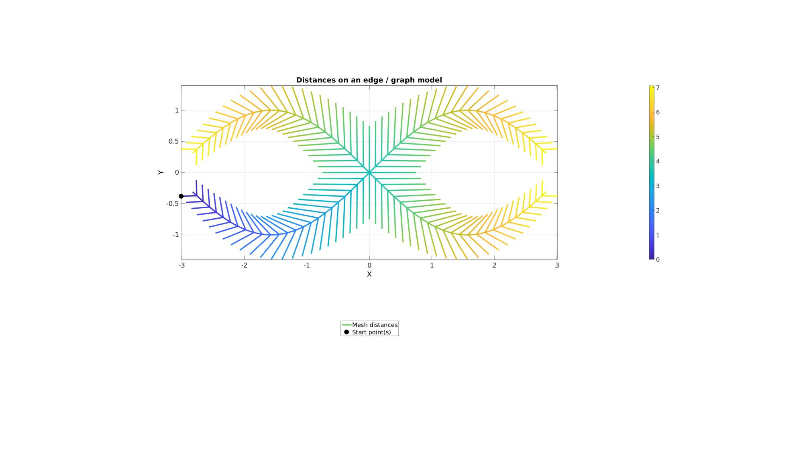
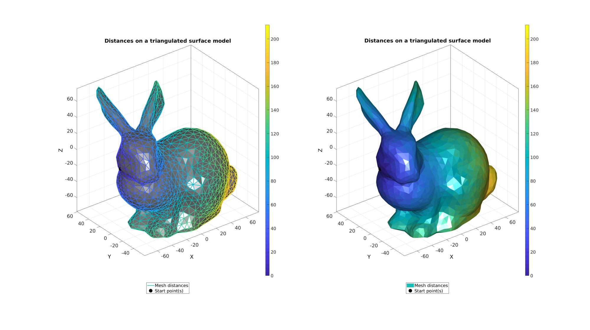
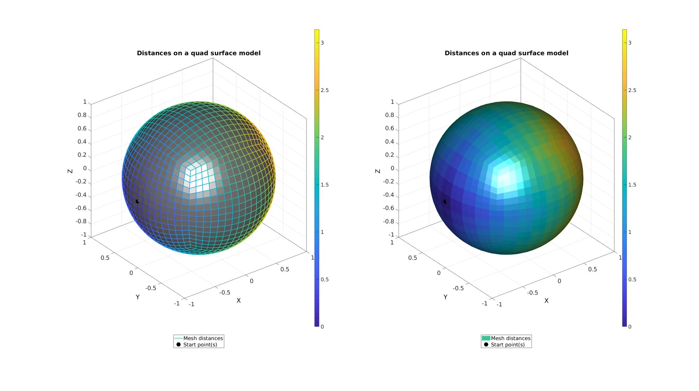
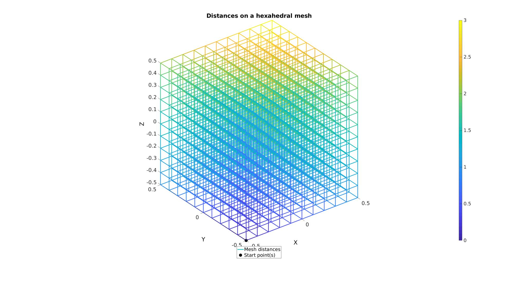
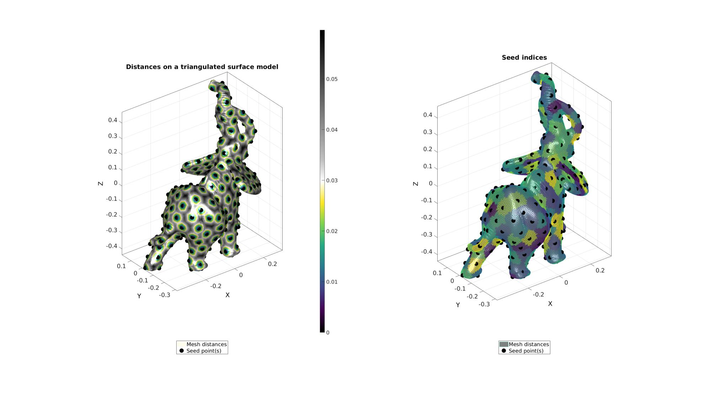
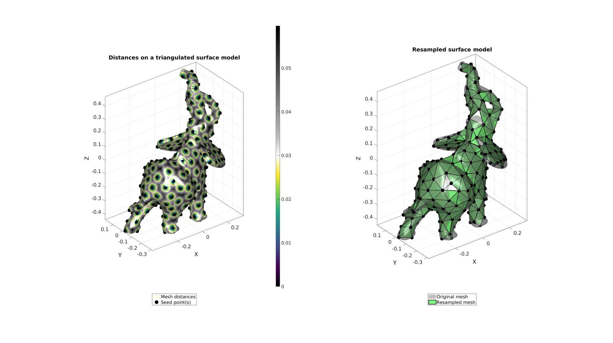
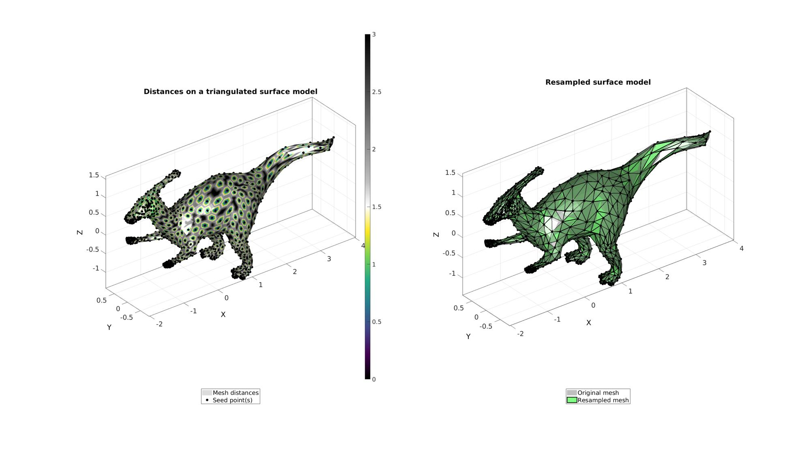

meshDistMarch
Below is a demonstration of the features of the meshDistMarch function
Contents
- Syntax
- Description
- Examples
- Example: Edge or graph data
- Example: Triangulated data
- Example: Quadrangulated data
- Example: Hexahedral mesh data
- Example: Tetrahedral mesh data
- Example: Mesh types effecting marching based distance computation
- Example: Using meshDistMarch for geodesic point sampling
- Example: Using meshDistMarch for geodesic surface resampling
- Example: Using unit edge lengths
clear; close all; clc;
Syntax
[d,seedIndex]=meshDistMarch(F,V,indStart,optionStruct);
Description
The meshDistMarch function can be used to compute distances on meshes. The distances can be used for points sampling on the mesh or for remeshing. The function can operate on edge descriptions or face descriptions. Therefore for volumetric meshes (e.g. consisting of tetrahedra or hexahedra) appropriate face or edge data should be computed first to formulate the input.
Input: E: the edges or faces for the mesh. E.g. an nx2 edge matrix or an nxm face matrix (n faces, m corners per face) V: the vertices for the mesh indStart: indices for one or more points to compute distances from optionStruct.toleranceLevel : The tolerance level for convergence. 0 is the default. optionStruct.numSeeds: Defines the number of seeds to generate on the mesh. Default is equal to startInd. optionStruct.waitBarOn=0; %Turn on/off waitbar optionStruct.unitEdgeOn=1; %Turn on/off the use of unit edge lengths
Output: d: distances (from the start/seed points) on the mesh vertices seedIndex: nearest seed (or start) point indices for each vertex, forming a quasi-Voronoi tesselation. If the second output is not requested the performance is enhanced.
Examples
Plot settings
cMapDist=flipud(igviridis(250));
[cMapIndices,scrambleIndices]=scramble(viridis(250),1); %Colormap
faceAlpha1=1;
faceAlpha2=0.65;
fontSize=25;
markerSize=50;
Example: Edge or graph data
Create branching example. E defines edges and V is a vertex array
n=75; x=linspace(0,0.9*pi,n); y=sin(x); V=[x(:) y(:) zeros(size(x(:)))]; V=evenlySampleCurve(V,n,'pchip',0); x=V(:,1); y=V(:,2); dV=vecnormalize(diff(V,1,1)); VdV=V(1:1:end-1,:); placePoints=1:3:n-1; E=[(1:1:n-1)' (2:1:n)']; numSteps=numel(placePoints); l=linspace(0.75,0.25,numSteps); a=linspace(0.25*pi,0.25*pi,numSteps); for q=1:1:numSteps R=euler2DCM([0 0 a(q)]); vr1=dV(placePoints(q),:)*R.*l(q); vr2=dV(placePoints(q),:)*R'.*l(q); Vb=linspacen([x(placePoints(q)) y(placePoints(q)) 0],vr1+[x(placePoints(q)) y(placePoints(q)) 0],n)'; Eb=[(1:1:n-1)' (2:1:n)']; E=[E; Eb+size(V,1)]; V=[V; Vb]; Vb=linspacen([x(placePoints(q)) y(placePoints(q)) 0],vr2+[x(placePoints(q)) y(placePoints(q)) 0],n)'; Eb=[(1:1:n-1)' (2:1:n)']; E=[E; Eb+size(V,1)]; V=[V; Vb]; end E=[E;E+size(V,1);]; V2=V; V2(:,2)=-V2(:,2); V2(:,1)=-V2(:,1); V=[V;V2]; E=[E;E+size(V,1);]; V2=V; V2(:,2)=-V2(:,2); V=[V;V2]; [E,V]=mergeVertices(E,V);
Compute distances on mesh
%Option set indStart=1; %Index of the start point optionStruct.toleranceLevel=0; %Tolerance for convergence optionStruct.numSeeds=1; %Number of seeds optionStruct.waitBarOn=0; %Turn on/off waitbar %Compute distances on mesh description d=meshDistMarch(E,V,indStart,optionStruct);
Visualization
cFigure; hold on; title('Distances on an edge / graph model','fontSize',fontSize); hp(1)=gpatch(E,V,'none',d,1,4); hp(2)=plotV(V(indStart,:),'k.','MarkerSize',markerSize); legend(hp,{'Mesh distances','Start point(s)'},'Location','SouthOutSide'); axisGeom; view(2); colorbar; drawnow;
Example: Triangulated data
Get example triangulated mesh data
[F,V]=stanford_bunny;%graphicsModels(1);
Compute distances on mesh
%Option set [~,indStart]=min(V(:,1)); %Index of the start point optionStruct.toleranceLevel=0; %Tolerance for convergence optionStruct.numSeeds=1; %Number of seeds optionStruct.waitBarOn=0; %Turn on/off waitbar %Compute distances on mesh description d=meshDistMarch(F,V,indStart,optionStruct);
Visualization
cFigure; subplot(1,2,1);hold on; title('Distances on a triangulated surface model','fontSize',fontSize); gpatch(F,V,'kw',d,1); hp(1)=gpatch(F,V,'none',d,1,2); hp(2)=plotV(V(indStart,:),'k.','MarkerSize',markerSize); legend(hp,{'Mesh distances','Start point(s)'},'Location','SouthOutSide'); axisGeom; colorbar; camlight headlight; subplot(1,2,2);hold on; title('Distances on a triangulated surface model','fontSize',fontSize); hp(1)=gpatch(F,V,d,'none',1); hp(2)=plotV(V(indStart,:),'k.','MarkerSize',markerSize); legend(hp,{'Mesh distances','Start point(s)'},'Location','SouthOutSide'); axisGeom; camlight headlight; colorbar; drawnow;
Example: Quadrangulated data
Get example quadrangulated mesh data
n=4; r=1; [F,V]=quadSphere(n,r);
Compute distances on mesh
%Option set [~,indStart]=min(V(:,1)); %Index of the start point optionStruct.toleranceLevel=0; %Tolerance for convergence optionStruct.numSeeds=1; %Number of seeds optionStruct.waitBarOn=0; %Turn on/off waitbar %Compute distances on mesh description d=meshDistMarch(F,V,indStart,optionStruct);
Visualization
cFigure; subplot(1,2,1);hold on; title('Distances on a quad surface model','fontSize',fontSize); gpatch(F,V,'kw',d,1); hp(1)=gpatch(F,V,'none',d,1,2); hp(2)=plotV(V(indStart,:),'k.','MarkerSize',markerSize); legend(hp,{'Mesh distances','Start point(s)'},'Location','SouthOutSide'); axisGeom; colorbar; camlight headlight; subplot(1,2,2);hold on; title('Distances on a quad surface model','fontSize',fontSize); hp(1)=gpatch(F,V,d,'none',1); hp(2)=plotV(V(indStart,:),'k.','MarkerSize',markerSize); legend(hp,{'Mesh distances','Start point(s)'},'Location','SouthOutSide'); axisGeom; camlight headlight; colorbar; drawnow;
Example: Hexahedral mesh data
Get example hexahedral mesh data
cubeDimensions=[1 1 1]; cubeElementNumbers=[10 10 10]; outputStructType=2; %A structure compatible with mesh view [meshStruct]=hexMeshBox(cubeDimensions,cubeElementNumbers,outputStructType); %Access elements, nodes, and faces from the structure HEX=meshStruct.elements; %The elements F=meshStruct.faces; %The faces V=meshStruct.nodes; %The nodes (vertices) %Get edges for mesh marching E=patchEdges(F); %Mesh edges
Compute distances on mesh
%Option set [~,indStart]=min(V(:,1)); %Index of the start point optionStruct.toleranceLevel=0; %Tolerance for convergence optionStruct.numSeeds=1; %Number of seeds optionStruct.waitBarOn=0; %Turn on/off waitbar %Compute distances on mesh description d=meshDistMarch(E,V,indStart,optionStruct);
Plotting model boundary surfaces and a cut view
cFigure; hold on title('Distances on a hexahedral mesh','FontSize',fontSize); hp(1)=gpatch(E,V,'none',d,1,3); hp(2)=plotV(V(indStart,:),'k.','MarkerSize',markerSize); legend(hp,{'Mesh distances','Start point(s)'},'Location','SouthOutSide'); colorbar; axisGeom(gca,fontSize); drawnow;
Example: Tetrahedral mesh data
Get example tetrahedral mesh data
[TET,V]=hex2tet(HEX,V,[],2); F=element2patch(TET,V); %Element faces %Get edges for mesh marching E=patchEdges(F); %Mesh edges
Compute distances on mesh
%Option set [~,indStart]=min(abs(V(:,1)-min(V(:,1)))+abs(V(:,2)-max(V(:,2)))+abs(V(:,3)-min(V(:,3)))); %Index of the start point optionStruct.toleranceLevel=0; %Tolerance for convergence optionStruct.numSeeds=1; %Number of seeds optionStruct.waitBarOn=0; %Turn on/off waitbar %Compute distances on mesh description d=meshDistMarch(E,V,indStart,optionStruct);
Plotting model boundary surfaces and a cut view
cFigure; hold on title('Distances on a tetrahedral mesh','FontSize',fontSize); hp(1)=gpatch(E,V,'none',d,1,3); hp(2)=plotV(V(indStart,:),'k.','MarkerSize',markerSize); legend(hp,{'Mesh distances','Start point(s)'},'Location','SouthOutSide'); colorbar; axisGeom(gca,fontSize); drawnow;

Example: Mesh types effecting marching based distance computation
In this example 3 mesh variations for a sphere are created. For each the start point is the point with the minimum x coordinate, i.e. a point on the far left of the plot. For each the true distance should be a smooth gradient with a maximum which equals pi. The marching algorithm uses the mesh to march and compute distances. One can imaging that straight paths (geodesically speaking) yeild the shortest distances. Hence zig-zag pattern (geodesically speaking) create false increased distances. This is not compensated for in this algorithm. Therefore the distance map depends on the mesh type and mesh connectivity. In the below example the regular quadrilateral mesh contains a straight path to the farthest point allong the equator. With mesh refinement the maximum distance would therefore converge on pi. However, other directions for the quadrilateral mesh produce zig-zag patterns causing distance to be altered. Hence the distance map departs from the smooth gradient allong the x-direction, one would expect. The triangulated mesh converted from the quadrilateral mesh contains both a straight path at the equator and also improved connectivity for other directions. The uniform geodesic triangulation contains the most smooth distance map.
Getting 3 different mesh types for a sphere.
n=3; r=1; [F1,V1]=quadSphere(n,r); [F2,V2]=quad2tri(F1,V1); [F3,V3]=geoSphere(n,r);
Compute distances on mesh
% -> Surface 1 %Option set [~,indStart1]=min(V1(:,1)); %Index of the start point optionStruct.toleranceLevel=0; %Tolerance for convergence optionStruct.numSeeds=1; %Number of seeds optionStruct.waitBarOn=0; %Turn on/off waitbar %Compute distances on mesh description [d1,i1]=meshDistMarch(F1,V1,indStart1,optionStruct); % -> Surface 2 %Option set [~,indStart2]=min(V2(:,1)); %Index of the start point optionStruct.toleranceLevel=0; %Tolerance for convergence optionStruct.numSeeds=1; %Number of seeds optionStruct.waitBarOn=0; %Turn on/off waitbar %Compute distances on mesh description [d2,i2]=meshDistMarch(F2,V2,indStart2,optionStruct); % -> Surface 3 %Option set [~,indStart3]=min(V3(:,1)); %Index of the start point optionStruct.toleranceLevel=0; %Tolerance for convergence optionStruct.numSeeds=1; %Number of seeds optionStruct.waitBarOn=0; %Turn on/off waitbar %Compute distances on mesh description [d3,i3]=meshDistMarch(F3,V3,indStart3,optionStruct);
Visualization
cFigure; subplot(1,3,1);hold on; title('Regular quad mesh','fontSize',fontSize); hp(1)=gpatch(F1,V1,d1,d1); hp(2)=plotV(V1(indStart1,:),'k.','MarkerSize',markerSize); legend(hp,{'Mesh distances','Start point(s)'},'Location','SouthOutSide'); axisGeom; colorbar; caxis([0 pi]); camlight headlight; view(2); subplot(1,3,2);hold on; title('Irregular quad mesh','fontSize',fontSize); hp(1)=gpatch(F2,V2,d2,d2); hp(2)=plotV(V2(indStart2,:),'k.','MarkerSize',markerSize); legend(hp,{'Mesh distances','Start point(s)'},'Location','SouthOutSide'); axisGeom; colorbar; caxis([0 pi]); camlight headlight; view(2); subplot(1,3,3);hold on; title('Geodesic triangulated mesh','fontSize',fontSize); hp(1)=gpatch(F3,V3,d3,d3); hp(2)=plotV(V3(indStart3,:),'k.','MarkerSize',markerSize); legend(hp,{'Mesh distances','Start point(s)'},'Location','SouthOutSide'); axisGeom; colorbar; caxis([0 pi]); camlight headlight; view(2); drawnow;

Example: Using meshDistMarch for geodesic point sampling
Get example triangulated mesh data
[F,V]=graphicsModels(7);
Compute distances on mesh
numSeeds=250; %Option set [~,indStart]=min(V(:,1)); %Index of the start point optionStruct.toleranceLevel=0; %Tolerance for convergence optionStruct.numSeeds=numSeeds; %Number of seeds optionStruct.waitBarOn=1; %Turn on/off waitbar %Use weigths based on z-direction % W=V(:,3); % W=W-min(W); % W=W./max(W); % W=(W*9)+1; % optionStruct.W=W; %Compute distances on mesh description [d,seedIndex]=meshDistMarch(F,V,indStart,optionStruct); [indSeeds,~,ind2]=unique(seedIndex);
Visualization
cFigure; subplot(1,2,1); hold on; title('Distances on a triangulated surface model','fontSize',fontSize); hp(1)=gpatch(F,V,d,'none',1); hp(1).FaceColor='Interp'; hp(2)=plotV(V(indSeeds,:),'k.','MarkerSize',markerSize); legend(hp,{'Mesh distances','Seed point(s)'},'Location','SouthOutSide'); axisGeom; camlight headlight; colormap(gca,cMapDist); colorbar; subplot(1,2,2); hold on; title('Seed indices','fontSize',fontSize); hp(1)=gpatch(F,V,'kw',ind2,1); hp(2)=plotV(V(indSeeds,:),'k.','MarkerSize',markerSize); legend(hp,{'Mesh distances','Seed point(s)'},'Location','SouthOutSide'); axisGeom; camlight headlight; colormap(gca,cMapIndices); %icolorbar; drawnow;
Example: Using meshDistMarch for geodesic surface resampling
See also: remeshTriSurfDistMap
[Fd,Vd,indSeed]=seedIndex2triangulation(F,V,seedIndex);
Visualization
cFigure; subplot(1,2,1); hold on; title('Distances on a triangulated surface model','fontSize',fontSize); hp(1)=gpatch(F,V,d,'none',1); hp(1).FaceColor='Interp'; hp(2)=plotV(V(indSeeds,:),'k.','MarkerSize',markerSize); legend(hp,{'Mesh distances','Seed point(s)'},'Location','SouthOutSide'); axisGeom; camlight headlight; colormap(gca,cMapDist); colorbar; subplot(1,2,2); hold on; title('Resampled surface model','fontSize',fontSize); plotV(V(indSeed,:),'k.','MarkerSize',50); hp(1)=gpatch(F,V,'kw','none',0.5); hp(2)=gpatch(Fd,Vd,'gw','k',1,2); legend(hp,{'Original mesh','Resampled mesh'},'Location','SouthOutSide'); axisGeom; camlight headlight; drawnow;
Example: Using unit edge lengths
Forcing unit edge lenghts means each edge is considered equally long i.e. a length of 1. Hence when used in combination with resampling, this causes the algorithm to resample dense regions in a dense fashion and coarse regions in a coarse fashion. Therefore using optionStruct.unitEdgeOn=1; one can force the resampling to have similar degrees of relative density differences. In the example below a dinosaur mesh with a fine mesh at the limbs and a coarse mesh on the main body is resampled using unit edge lengths. The output can be seen to remain refined at the limbs.
Get example triangulated mesh data
[F,V]=graphicsModels(4); [F,V]=subtri(F,V,2);
Compute distances on mesh
%Option set [~,indStart]=min(V(:,1)); %Index of the start point optionStruct.toleranceLevel=0; %Tolerance for convergence optionStruct.numSeeds=1000; %Number of seeds optionStruct.waitBarOn=1; %Turn on/off waitbar optionStruct.unitEdgeOn=1; %Compute distances on mesh description [d,seedIndex]=meshDistMarch(F,V,indStart,optionStruct); [indSeeds,~,ind2]=unique(seedIndex); %Compute resampled surface [Fd,Vd,indSeed]=seedIndex2triangulation(F,V,seedIndex);
Visualization
cFigure; subplot(1,2,1); hold on; title('Distances on a triangulated surface model','fontSize',fontSize); hp(1)=gpatch(F,V,d,'none',1); hp(1).FaceColor='Interp'; hp(2)=plotV(V(indSeeds,:),'k.','MarkerSize',25); legend(hp,{'Mesh distances','Seed point(s)'},'Location','SouthOutSide'); axisGeom; camlight headlight; colormap(gca,cMapDist); colorbar; subplot(1,2,2); hold on; title('Resampled surface model','fontSize',fontSize); plotV(V(indSeed,:),'k.','MarkerSize',25); hp(1)=gpatch(F,V,'kw','none',0.5); hp(2)=gpatch(Fd,Vd,'gw','k',1,2); legend(hp,{'Original mesh','Resampled mesh'},'Location','SouthOutSide'); axisGeom; camlight headlight; drawnow;

GIBBON www.gibboncode.org
Kevin Mattheus Moerman, gibbon.toolbox@gmail.com
GIBBON footer text
License: https://github.com/gibbonCode/GIBBON/blob/master/LICENSE
GIBBON: The Geometry and Image-based Bioengineering add-On. A toolbox for image segmentation, image-based modeling, meshing, and finite element analysis.
Copyright (C) 2019 Kevin Mattheus Moerman
This program is free software: you can redistribute it and/or modify it under the terms of the GNU General Public License as published by the Free Software Foundation, either version 3 of the License, or (at your option) any later version.
This program is distributed in the hope that it will be useful, but WITHOUT ANY WARRANTY; without even the implied warranty of MERCHANTABILITY or FITNESS FOR A PARTICULAR PURPOSE. See the GNU General Public License for more details.
You should have received a copy of the GNU General Public License along with this program. If not, see http://www.gnu.org/licenses/.